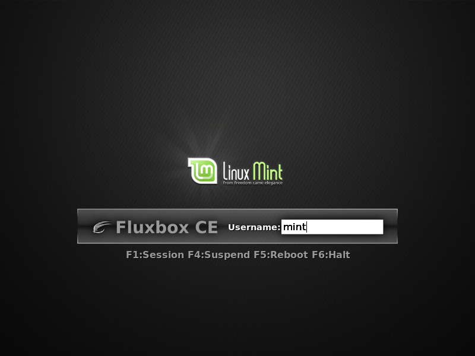

Sessions are sets of starting programs, you can choose what you want to run for example KDE4 or GNOME or maybe Fluxbox, then you may select fluxbox session.

All login managers are providing session selection function, after successfull authorization the session name is delivered to XSM to launch suitable set of software.
Default session depends on specific user's configuration placed in $HOME/.xsm, but all other sessions are defined by system administrator and placed in /usr/share/xsm/sessions in current version of XSM.
To allow specific user using XSM you must link user's $HOME/.xinitrc with /usr/bin/xsm-exit you can do this using this command:
# ln -s /usr/bin/xsm-exit /home/webnull/.xinitrc
Example of session placed in /usr/share/xsm/sessions/:
#!/bin/sh setxkbmap pl exec ck-launch-session startkde
> Go back